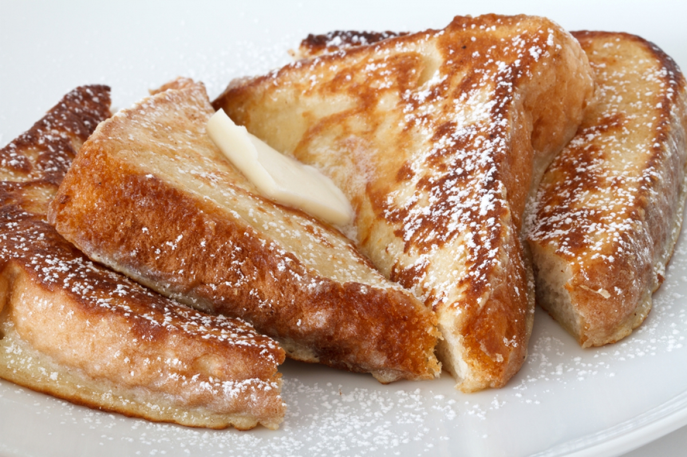

French Toast

Description
Super duper fluffy french toast that just thinking about it will make you lick your lips, yummmmm
Ingredients
- 1/4 cup all-purpose flour
- 1 cup milk
<1i>1 pinch of salt
- 3 eggs
- 1/2 tsp ground cinnamon
- 1 tsp vanilla extract
- 1 tbsp white sugar
- 12 thick slices of bread
Directions
- Measure flour inot a large mixin bowl. Slowly whisk in the milk. Whisk in the salt eggs, cinnamon, vanilla extract, and sugar until smooth.
- Heat a lightly oiled griddle or frying pan over medium heat.
- Soak bread slices in mixture until saturated. Cook bread on each side until golden brown. Serve hot